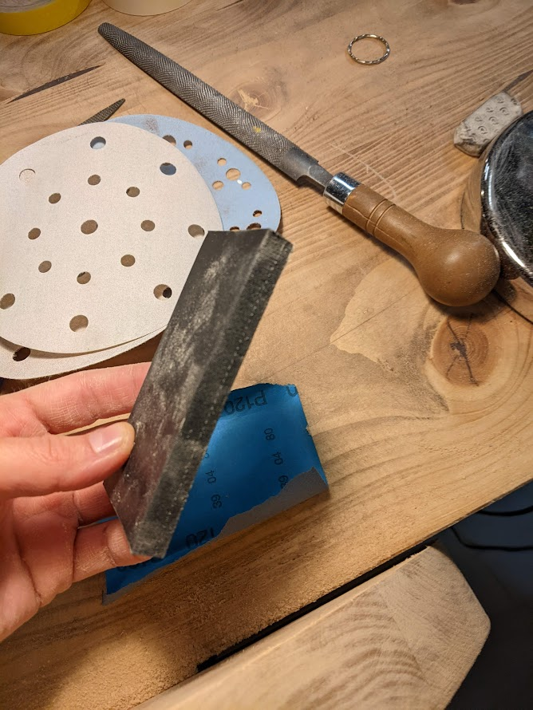
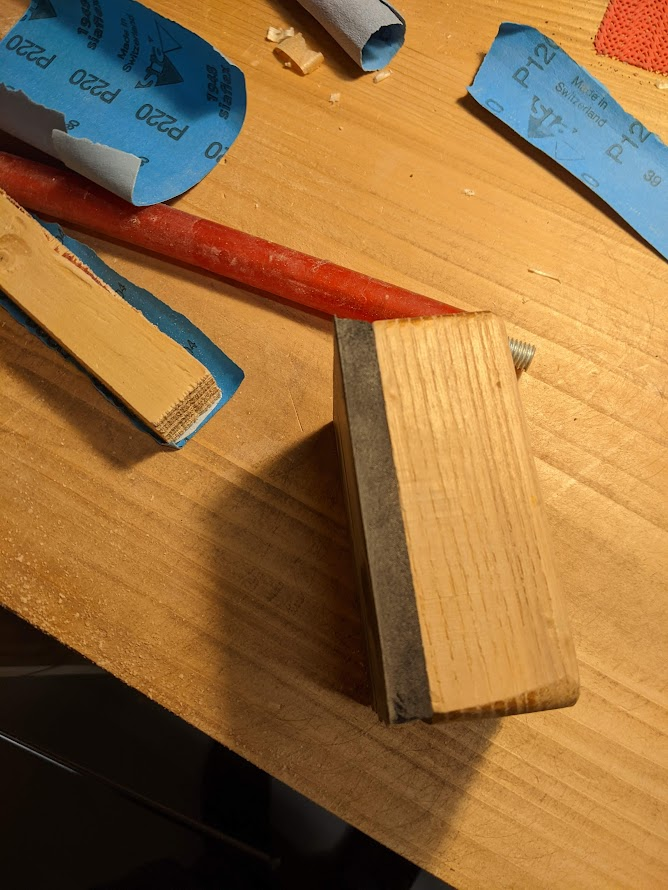
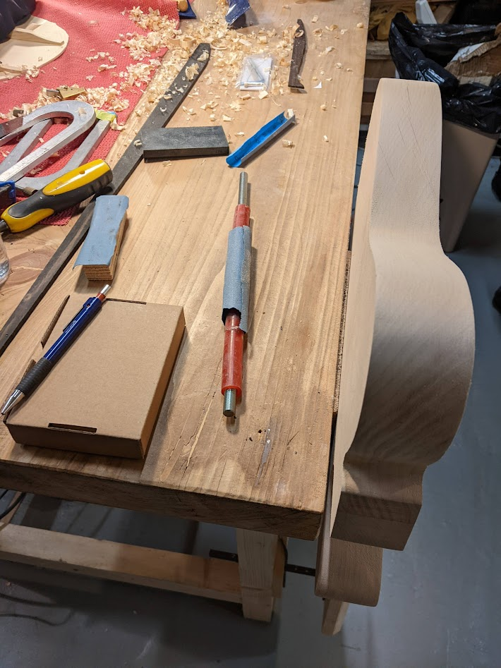

Enter sand-man 🤟
How does it feel to be alive?

Una volta terminate le operazioni di asportazione del materiale con la raspa, la fase successiva è quella di levigare a mano (-> sand-man…..hahhhhaahhahaah…. ehhmmm…😬) con molta cura il contorno del corpo della chitarra. L’obiettivo principale è quello di eliminare completamente i segni e i solchi lasciati dalla raspa, fino ad arrivare ad una superficie completamente liscia al tatto. Quando si leviga il legno bisogna prestare attenzione a non insistere troppo in un punto specifico, ma fare delle passate lunghe e continue. Questa cosa, che sembra all’apparenza banale da fare, in realtà non è così semplice. Viene infatti naturale strofinare velocemente i solchi lasciati dalla raspa come se si dovesse rimuovere una macchia da un tavolo. In generale l’operazione che va fatta è quella di strofinare un pezzetto di carta abrasiva su un supporto non eccessivamente duro per le parti continue. Nelle parti a forte curvatura, come quelle vicine allo scasso per il manico è necessario avvolgere la carta abrasiva ad un supporto cilindrico, che sia di raggio adeguato per i tratti più incurvati.
Strumenti di lavoro
Gli strumenti usati in questa fase sono molto semplici da reperire:
carta abrasiva a grana crescente: 120, 220, 320
un blocchetto di gomma dura di spessore circa 1 cm
un blocchetto di gomma morbida (spessore 1 cm) attaccata ad un blocco di legno
nastro biadesivo (non strettamente necessario)


Fasi della lavorazione
Si parte strappando un pezzetto di carta abrasiva grana 120. Il pezzetto deve essere ai lati leggermente più grande del blocchetto di gomma in modo che con le mani si riesca a fare presa sulle alette che sbordano, le si piega e si fa aderire bene la carta alla parte piatta del blocchetto. Si inizia la levigatura facendo passate lunghe e, con la giusta pressione, si deve cercare di mantenere il blocchetto il più possibile parallelo al bordo. Se nella fase precedente di asportazione con la raspa non si è mantenuta la perpendicolarità tra la superficie delle facce e del bordo, nella fase di levigatura è praticamente impossibile recuperare gli errori commessi in precedenza. Probabilmente con qualche elettroutensile il discorso è diverso, ma in questo corso si fa tutto a mano, quindi ogni fase è cruciale per la buona riuscita di quella successiva. Infatti, la forma va data nella fase di sagomatura, mentre la levigatura ha il solo scopo di rimuovere i solchi, lisciare le superfici e riportare alla luce le venature del legno. Ogni tanto, ci si ferma per controllare la perpendicolarità della facce con il bordo, e soprattutto con la mano si deve sentire la superficie che progressivamente diventa liscia.
Fatto il primo giro con la grana 120, si passa alla 220. In questo caso ho usato il blocchetto con la gomma morbida. Quando si inizia a salire di grana ci si accorge subito della meraviglia delle venature che vengono fuori dal legno, la superficie diventa sempre più liscia e gli spigoli sempre più affilati. A proposito di spigoli: mai stondare lo spigolo! Lo spigolo in tutte le fase di levigatura non deve MAI essere stondando, con il blocchetto le passate devono essere parallele alla superficie del bordo. Il raccordo tra le facce verrà fatto più avanti.
Nella foto in basso si vede il supporto in gomma dura inserito in un tondino di metallo, che gli conferisce la giusta rigidità, e la carta abrasiva arrotolata alla gomma. Con questo accrocco si riesce a levigare bene le parti convesse, prestando sempre la massima attenzione nel cercare di rimanere paralleli alla faccia su cui si lavora. Bisogna procedere con la grana 220 fin quando non risultano ben visibili le venature e le sfumature degli anelli del legno.

Accuratezza finale
L’accuratezza finale della fase della levigatura dipende molto dal tipo di finitura che di decide di utilizzare. Se si sceglie una finitura trasparente, che sia lucida o opaca o tipo “sunburst”, che risalti le venature del legno, qualsiasi imperfezione, buco, dosso, ecc. viene messo in risalto. Pertanto è consigliato portare la levigatura fino alla grana 320, prestando la massima cura alle piccole imperfezioni.
(💡) PRO-TIP. È capitato alcune volte di dare dei colpi accidentali, con la raspa, il calibro, altri oggetti appuntiti, al pezzo in lavorazione. Se si tratta di un buchetto millimetrico basta far cadere una goccia d’acqua (proprio una di numero) in modo da gonfiare i pori quanto basta, aspettare che asciughi e ripassare con la carta abrasiva.
Nel caso in cui si scelga una finitura coprente, come nel mio caso (😉), si può evitare l’ultimo step e fermarsi alla grana 220. La vernice in questo caso andrà a riempire le piccole imperfezioni, tuttavia è comunque necessario che le superfici siano le più liscie possibile.
Infine, per completare questa fase abbiamo anche portato il pezzo allo spessore finale, ovvero 45 mm, dando nuovamente una passata con la calibratrice… qui c’è poco da dire, con queste macchine si fa tutto in poche passate (Parte2 ). Per chi, come me, non ha intenzione di acquistare simili macchinari, ho visto su YouTube (spianatrice fai da te) molti hobbisti utilizzare la fresatrice con due binari paralleli e una fresa a taglienti per spianare. Se mai dovessi avere in futuro un mio “laboratorio”, potrebbe essere una soluzione valida per portare i pezzi allo spessore necessario.